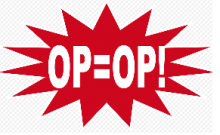
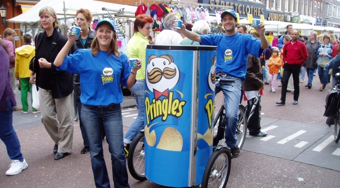
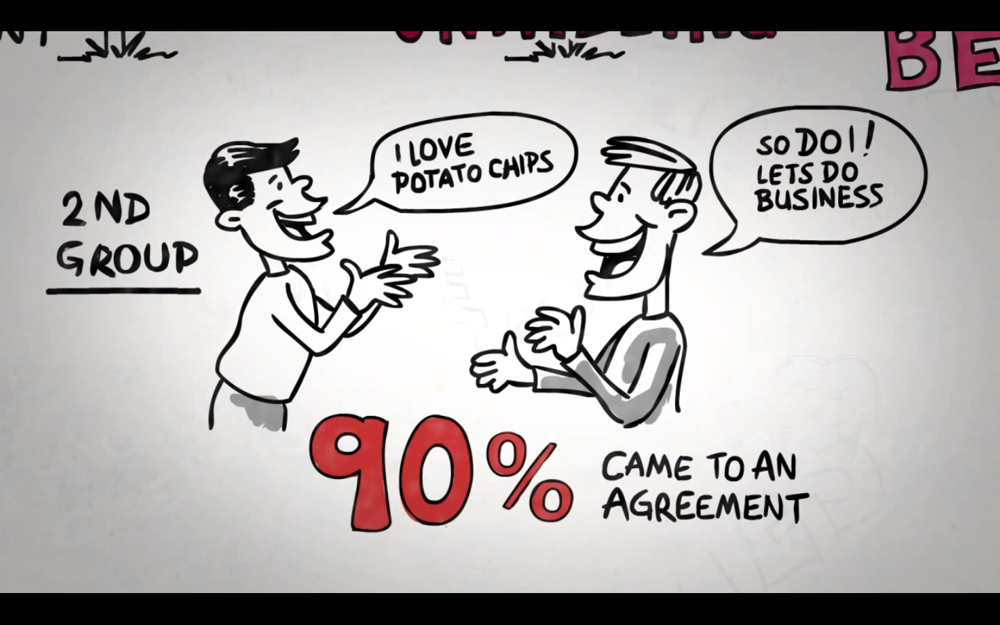
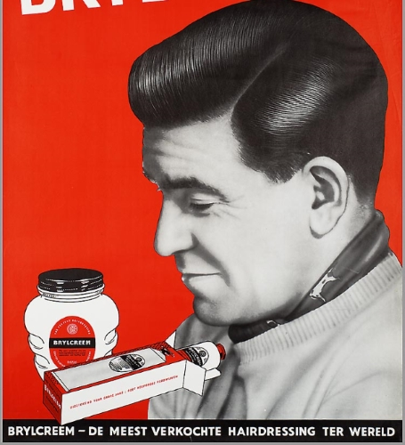
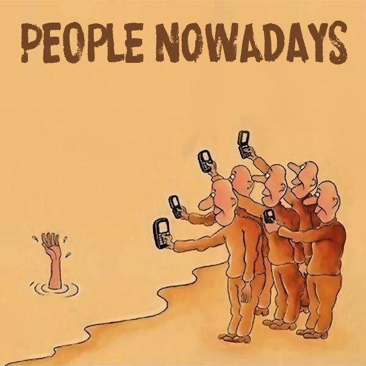

Beinvloeding
- Techniek
- 6 principes van Cialdini
- Verdediging
- Kort verhaal
Hoe nemen je hersenen een beslissing?
- Complexe, snel veranderde omgeving
- Niet alle informatie die we binnen krijgen kunnen we volledig verwerken
- Oplossing: automatische en stereotype aanpak
Automatische reactie op 1 stukje informatie
- "Als een expert het zegt, moet het wel waar zijn"
- "Duur = goed"
- "Kies wat andere mensen ook kiezen"
- "Ten opzichte van de totaalprijs maken die paar opties niet meer uit"
- "We krijgen hier zoveel korting op deze keuken als we hem vandaag bestellen"
Oefening: Zeg je weleens ergens 'Ja' tegen, terwijl je eigenlijk 'Nee' had willen zeggen?
Cialdini: 6 shortcuts
- Schaarste
- Autoriteit
- Consistentie
- Wederkerigheid
- Sympathie
- Sociale bewijskracht
Schaarste

Schaarste
Schaarste
- Verdediging: Zie de stijgende opwinding als een signaal
- Verdediging: Bezit vs. verwachtingen van het product
Autoriteit
Autoriteit
Autoriteit
- Verdediging: Is de autoriteit werkelijk deskundig?
- Verdediging: Hoe betrouwbaar is deze expert?
Consistentie
Consistentie
Consistentie
- Verdediging: Herken als je op een verzoek ingaat waar je niet op wilt ingaan, dit voel je in je maag of substieler in je hart
Wederkerigheid

Wederkerigheid
- Verdediging: erkennen dat het een list is i.p.v. een gunst
Sympathie (Liking)

Sympathie (Liking)
Sympathie
- Verdediging: Scheiden van de persoon en het verzoek zelf
Vraag: Waarom kopen er zoveel mensen een iPhone?
Sociale bewijskracht

Sociale bewijskracht

Sociale bewijskracht
- Verdediging: Controleer op onjuiste sociale gegevens (vervalsing)
- Verdediging: Erkennen dat het gedrag van andere niet als enige basis mag dienen
Cialdini: 6 shortcuts
- Schaarste
- Autoriteit
- Consistentie
- Wederkerigheid
- Sympathie
- Sociale bewijskracht